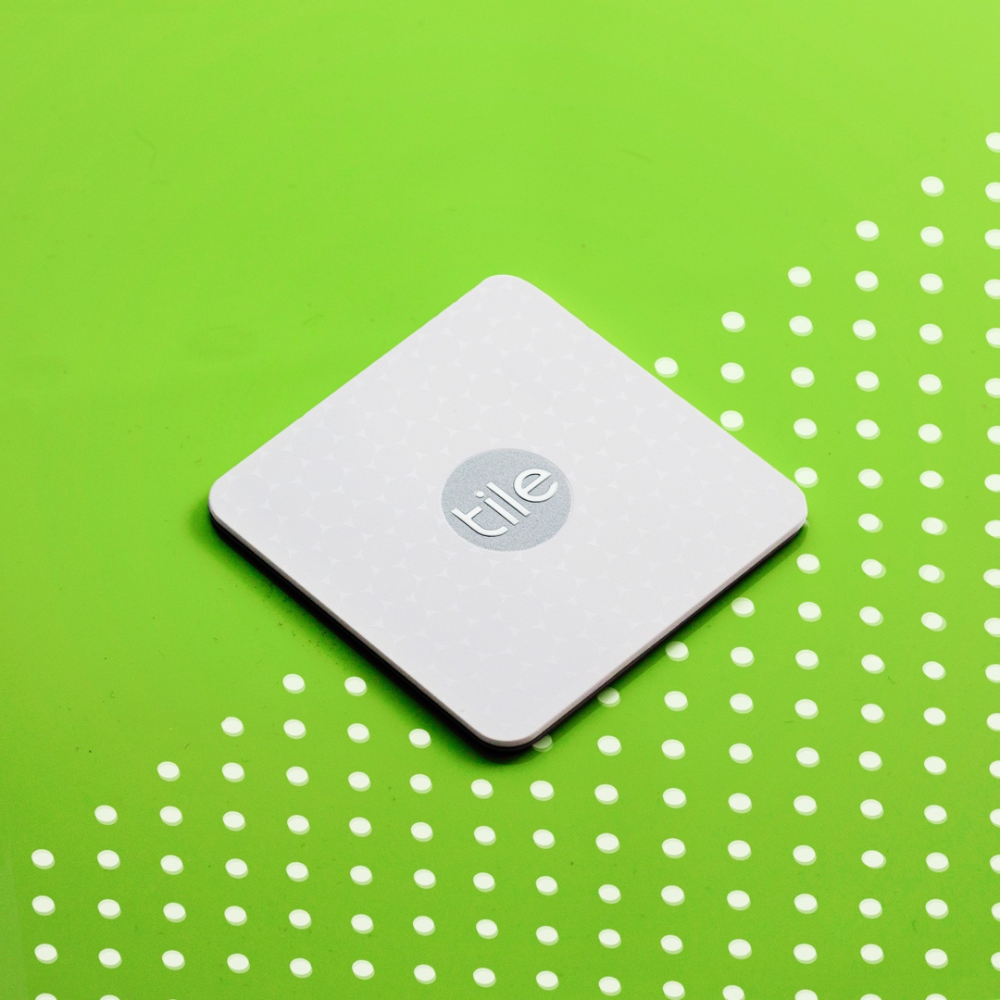
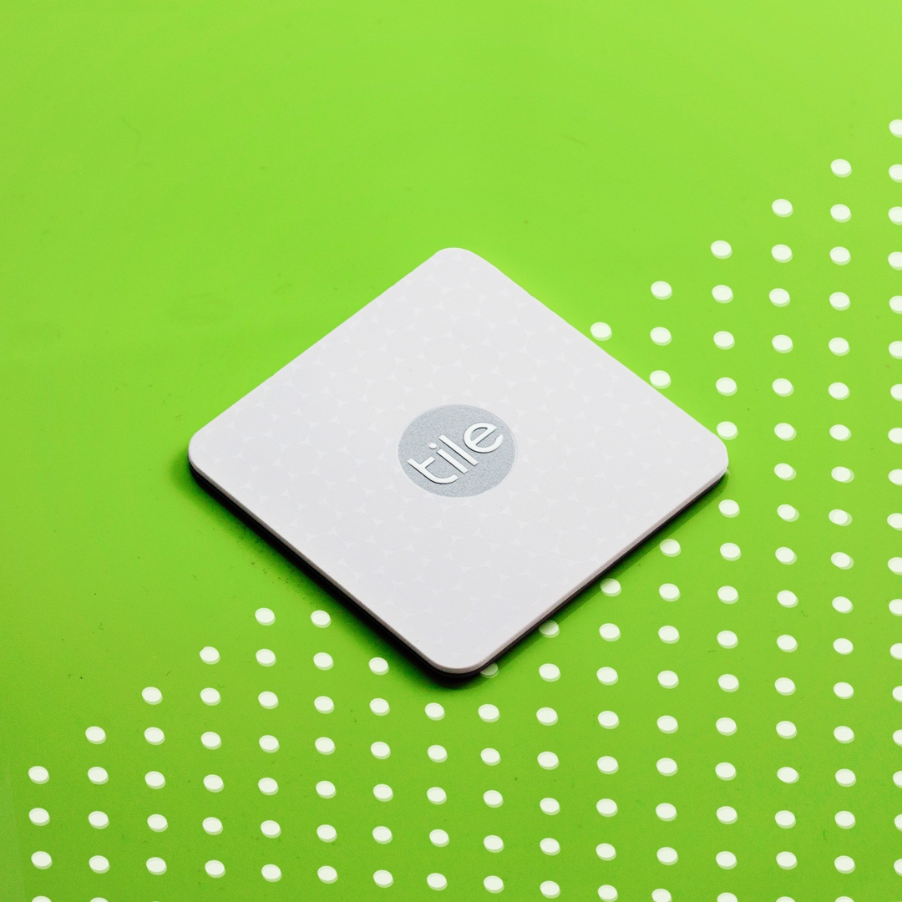

Tile. Sometimes you just want to create, be different, and know where your wallet is.
Tile is a tech product that you can put in any belongings you have that you want to track. The Tile device works with a mobile app that uses community network to correctly identify where each of the tiles is to its owner.
Background
Back in December 2016 right around Christmas season, I was invited by Tile to take photos for their social media in my personal style that was largely inspired by pop art ad well as the analogy of people as patterns.
Process
Due to the small size of this product, I decided to use a small product light box for the shoot. I decided to keep the subject as the main focus.
Design Decision
Because the product is small, details became ever so more important. One of the things I noticed was the intricate pattern that is glazed over the surface of each Tile. I want the light to shine off the reflective surface of the Tile, but not so much that it distract away from the main Tile logo. I decided to focus primarily on bringing out the logo more so that is is clear enough that it can be enhanced later while keeping the surface details more subtle.
I decided to use patterns as an analogy for personality. Like Tiles, each of us has different needs/personalities/characteristics, but after all, we share commonality in certain needs that can not be replace. In this incident, different tiles represent different needs we have, but at the same time they all share the simplicity that we crave for— never losing our stuff again.
 

Post Mortem
Given the resources I have, I ended up post editing the colors to the background. If I had more resources at the time, I would’ve gotten colored construction paper as an alternative to express different personalities and vibrancy.However, post manipulation did give me more freedom in general to play around and test out different moods.
While I like the concept of people as patterns, I could’ve push out the concept of people as pattern even more to really get the point across. The angle and the similarity in composition is probably enough to tie the theme together regardless of the patterns.

Interested?
If you are interested in doing a customized shot in this style. Shoot me a message!